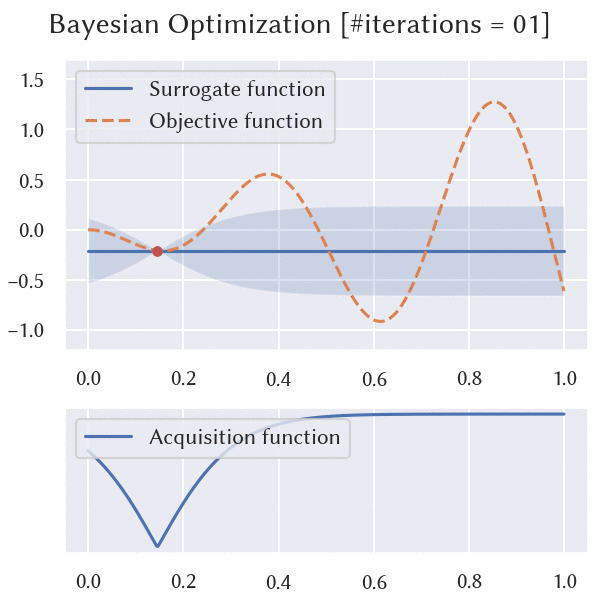

mathtoolbox


Mathematical tools (interpolation, dimensionality reduction, optimization, etc.) written in C++11 and Eigen.

Algorithms
Scattered Data Interpolation and Function Approximation
rbf-interpolation: Radial basis function (RBF) interpolationgaussian-process-regression: Gaussian process regression (GPR)
Dimensionality Reduction and Low-Dimensional Embedding
Numerical Optimization
backtracking-line-search: Backtracking line searchbayesian-optimization: Bayesian optimizationbfgs: BFGS methodgradient-descent: Gradient descent methodl-bfgs: Limited-memory BFGS methodstrong-wolfe-conditions-line-search: Strong Wolfe conditions line search
Linear Algebra
Utilities
acquisition-functions: Acquisition functionsconstants: Constantsdata-normalization: Data normalizationkernel-functions: Kernel functionsprobability-distributions: Probability distributions
Dependencies
Main Library
- Eigen http://eigen.tuxfamily.org/ (
brew install eigen/sudo apt install libeigen3-dev)
Python Bindings
- pybind11 https://github.com/pybind/pybind11 (included as gitsubmodule)
Examples
- optimization-test-function https://github.com/yuki-koyama/optimization-test-functions (included as gitsubmodule)
Use as a C++ Library
mathtoolbox uses CMake https://cmake.org/ for building source codes. This library can be built, for example, by
git clone https://github.com/yuki-koyama/mathtoolbox.git --recursive
cd mathtoolbox
mkdir build
cd build
cmake ../
make
and optionally it can be installed to the system by
make install
When the CMake parameter MATHTOOLBOX_BUILD_EXAMPLES is set ON, the example applications are also built. (The default setting is OFF.) This is done by
cmake ../ -DMATHTOOLBOX_BUILD_EXAMPLES=ON
make
When the CMake parameter MATHTOOLBOX_PYTHON_BINDINGS is set ON, the example applications are also built. (The default setting is OFF.) This is done by
cmake ../ -DMATHTOOLBOX_PYTHON_BINDINGS=ON
make
Prerequisites
macOS:
brew install eigen
Ubuntu:
sudo apt install libeigen3-dev
Use as a Python Library
pymathtoolbox is a (sub)set of Python bindings of mathtoolbox. Tested on Python 3.6, 3.7, and 3.8.
It can be installed via PyPI:
pip install git+https://github.com/yuki-koyama/mathtoolbox
Prerequisites
macOS
brew install cmake eigen
Ubuntu 16.04/18.04
sudo apt install cmake libeigen3-dev
Examples
See python-examples.
Gallery
Bayesian optimization (bayesian-optimization) solves a one-dimensional optimization problem using only a small number of function-evaluation queries.

Classical multi-dimensional scaling (classical-mds) is applied to pixel RGB values of a target image to embed them into a two-dimensional space.

Self-organizing map (som) is also applicable to pixel RGB values of a target image to learn a two-dimensional color manifold.

Projects Using mathtoolbox
- SelPh https://github.com/yuki-koyama/selph (for
classical-mds) - Sequential Line Search https://github.com/yuki-koyama/sequential-line-search (for
acquisition-functions,kernel-functions,log-determinant, andprobability-distributions)
Contributing
Bug reports, suggestions, feature requests, and PRs are highly welcomed.
Licensing
The MIT License.